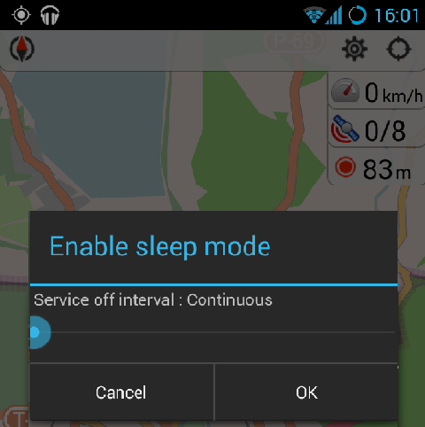

Version 1.9
Sleep mode (Loggin services & Sleep Mode)
"Keep gps on" formerly known as "Sleep mode" was moved to "GPS status" widget. Previously keep gps on could be accessed via Settings or via monitoring widgets. In current version, "GPS status" can enable keep gps on which will be used widely for application.
